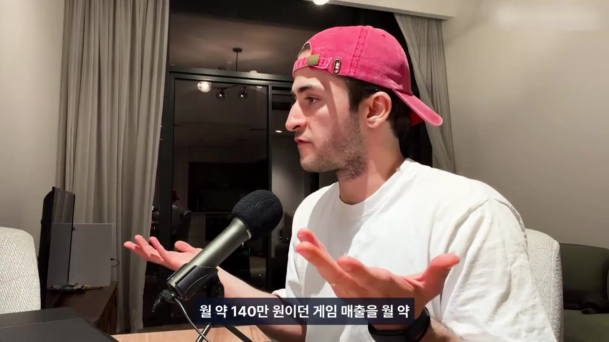
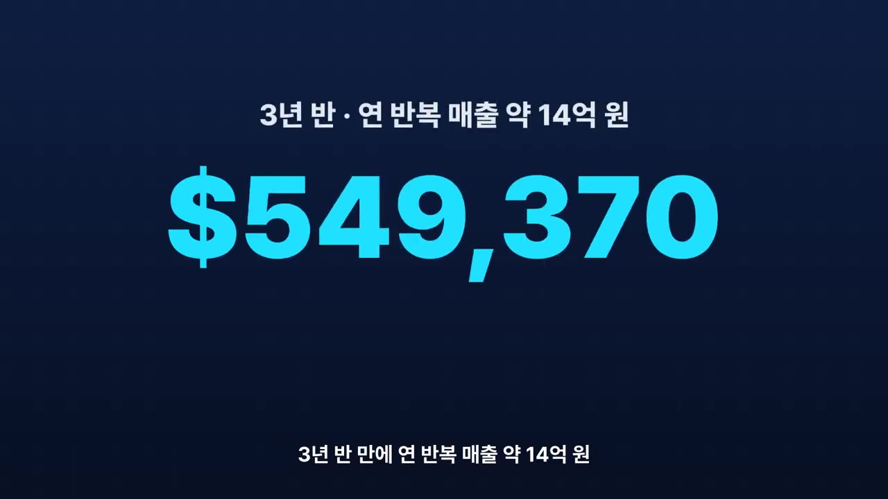
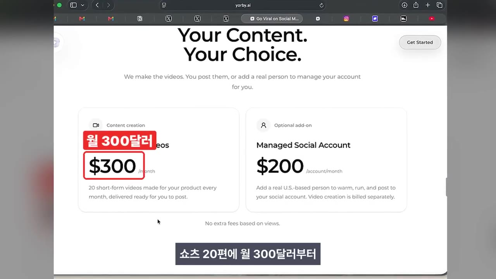
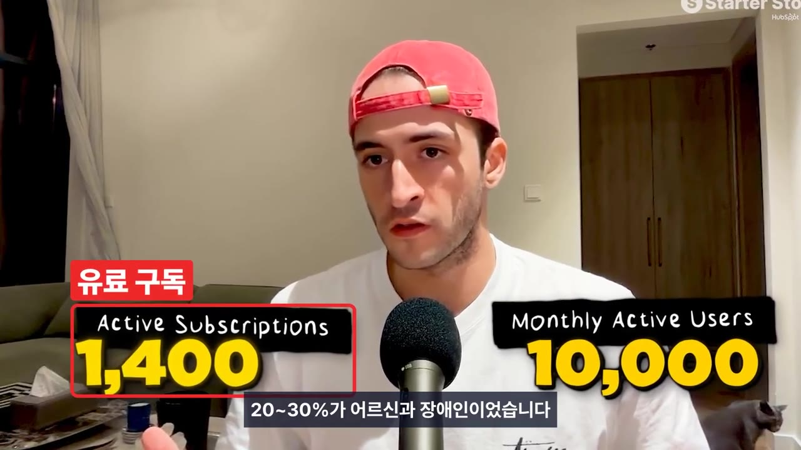
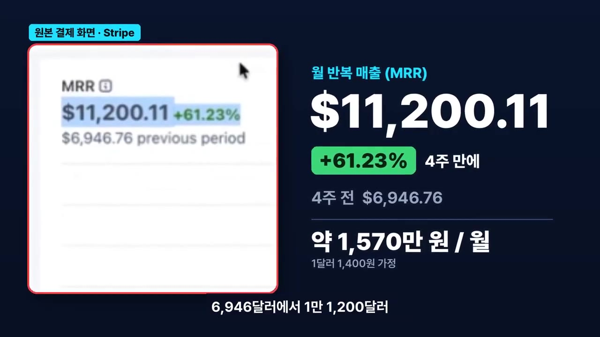
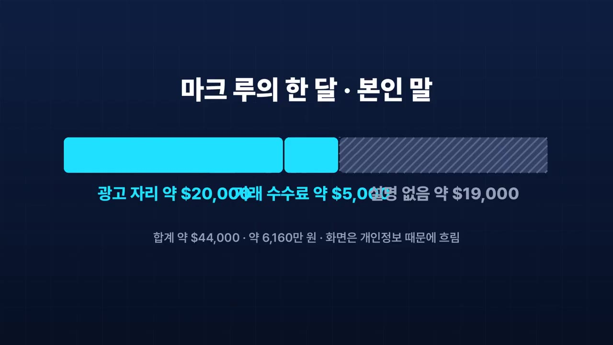
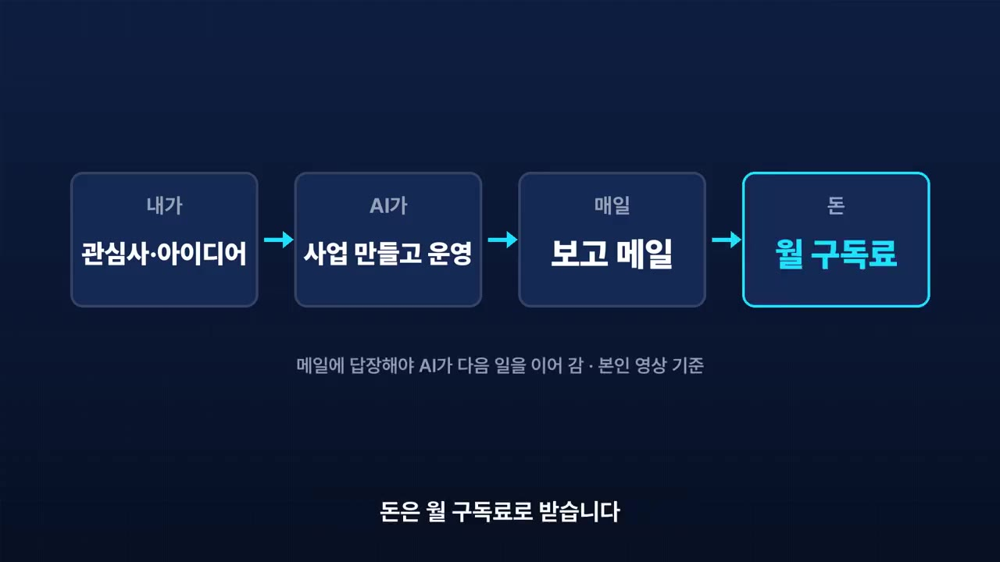

AI 부업 아이디어 7가지, 혼자 시작해 한 달 1,000만 원 넘게 번 미국 1인 사업
🎙️ 자막 대신 영상 음성을 받아써서 정리 (ko (음성 받아쓰기·GPU))
▶ 원본 영상 보기한눈에 보기
- 미국의 1인 AI 사업 7개를 '한국에서 혼자 시작하기 쉬운 정도 × 한 달 매출 크기'로 순위를 매겼습니다. 순위는 채널의 판단이고 매출 순위가 아닙니다.
- 1위는 회사 고객 상담을 대신 받는 AI 챗봇 구독입니다. 3년 반 만에 연 반복 매출 약 14억 원을 냈고, 같은 질문이 반복되는 가게의 카카오톡 채널 챗봇으로 옮겨 볼 수 있다고 합니다.
- 2·3위(AI 쇼츠 대행, 업종 특화 AI 컨설팅)는 코딩 없이 결과나 경력을 파는 사업이라 혼자 시작하기가 가장 쉽다고 평가했습니다.
- 7개 사례의 공통점은 세 가지입니다. 첫 손님은 이미 있던 인맥에서 나왔고, 만드는 힘보다 알리는 힘이 중요했고, 툴이 안 팔리면 결과를 팔았습니다.
- 매출은 대부분 본인 말이나 본인 화면을 근거로 한 숫자이고, 환율은 1달러에 1,400원으로 잡았습니다.
이런 분께 도움이 됩니다
- AI로 부업이나 1인 사업을 생각하는데 무엇부터 할지 정하지 못한 직장인
- 내 업종 경력이나 인맥을 AI 상품으로 바꿀 방법을 찾는 분
- 해외 사례를 한국 시장에 어떻게 옮길지 아이디어가 필요한 분
핵심 내용
순위를 매긴 기준
- 순위는 '혼자 시작하기 쉬운 정도(채널 판단) × 돈 크기(한 달 원화 구간)'로 정했습니다. 같은 잣대로 잰 매출 순위가 아닙니다.
- 숫자마다 근거가 달라서 [본인 말], [원본 화면], [보도]로 나눠 표시했습니다. 환율은 1달러에 1,400원으로 가정했습니다.
| 순위 | 사업 | 인물 | 대표 숫자(근거) |
|---|---|---|---|
| 1위 | 회사 상담 AI 챗봇 구독 | 에런 | 3년 반 만에 연 반복 매출 약 14억 원 (본인 말) |
| 2위 | AI 쇼츠 대행 | 요비 제작자 | 출시 6개월 만에 연매출 약 1억 4천만 원 (본인 화면) |
| 3위 | 업종 특화 AI 도입 컨설팅 | 에드위나 | 첫 계약 약 1,960만 원 (본인 말) |
| 4위 | 어르신도 쓰는 받아쓰기 앱 | 쿠로시 | 매출 약 1,540만 원(기간은 자막상 불분명), 유료 구독 1,400개 |
| 5위 | AI 쇼츠 클립 앱 | 바딤(19살) | 월 반복 매출 약 1,570만 원 (결제 화면) |
| 6위 | 매출 인증 순위표 + 거래 장터 | 마크 루(Marc Lou) | 한 달 약 6,160만 원 (본인 말) |
| 7위 | AI가 사업을 대신 굴려 주는 구독 | 벤 세라(Ben Cera) | 연 환산 매출 약 280억 원 (본인 말), 투자 약 420억 원 (보도) |
7개의 공통점 세 가지
- 첫 손님은 이미 있는 연결에서 나왔습니다. 다니던 회사(1위), 자기를 해고한 회사(3위), 이전 제품 사용자에게 보낸 메일(7위)이 그 예입니다. (10:16)
- 만드는 힘보다 알리는 힘이 중요했습니다. 잘된 광고 형식을 따라 하거나(5위) 블로그 글을 200개 쌓은(4위) 것이 성장의 계기였습니다.
- 덧붙인 사례: 게임 앱을 혼자 만든 캔은 혹평이 쏟아진 레딧 글 하나로 게임 매출을 월 약 140만 원에서 월 약 1,400만 원으로 키웠습니다. (10:39)

- 툴이 안 팔리면 결과를 팝니다. 쇼츠 대행(2위)과 대행사를 통한 납품(1위)이 여기에 해당합니다.
💡 좋은 기술보다 이미 아는 손님과 알리는 방법이 먼저였습니다.
결과를 파는 사업 (1·2·3위)
- 1위 회사 상담 AI 챗봇 구독 (에런). 회사 기술 책임자(CTO)였던 에런은 부업 8개를 연달아 실패한 뒤, 아홉 번째로 회사 고객 상담을 대신 받는 AI 챗봇을 만들었습니다.
- 3년 반 만에 연 반복 매출 약 14억 원을 냈다고 본인이 말했습니다. (9:18)

- 무료 체험 없이 선결제를 받고 환불을 보장해서 진지한 손님만 받았습니다.
- 유행하는 기술이 아니라 회사가 돈을 낼 문제에서 출발했습니다. 돈이 크고 혼자 시작할 길도 보여서 1위입니다.
- 한국에서 해 본다면: 같은 질문이 매일 반복되는 쇼핑몰·병원·학원의 카카오톡 채널에 상담 챗봇을 연결합니다. 첫 손님은 지금 다니는 회사나 아는 사장님입니다. 직접 영업이 어려우면 홈페이지 제작사나 마케팅 대행사에 설치비와 월 관리비를 받고 납품합니다.
- 2위 AI 쇼츠 대행 (요비). 개발자 유튜버가 AI 영상 툴 '요비'를 만들었고, 출시 6개월 만에 연매출 약 1억 4천만 원이 됐습니다(본인 화면 기준).
- 돈을 낸 고객이 툴을 직접 쓰지 않고 있다는 걸 알고, 툴 대신 결과(완성된 쇼츠)를 팔기로 바꿨습니다. (7:34)
- 가격은 쇼츠 20편에 월 300달러부터입니다. 고객당 단가는 약 14만 원에서 42만~70만 원으로 올랐고, 9월에는 흑자를 냈다고 합니다.

- 코딩 없이 동네 가게부터 시작할 수 있어서 2위입니다.
- 한국에서 해 본다면: 동네 가게·병원·학원의 쇼츠를 월 20편씩 대신 만들어 주는 월 정액 상품입니다. 바이럴보다 돈을 낸 고객이 실제로 쓰고 있는지를 매주 확인합니다.
- 3위 업종 특화 AI 도입 컨설팅 (에드위나). 한 회사에서 17년을 일하고 부사장급에서 정리해고된 뒤, 퇴직금을 공부와 자격증에 쓰고 AI 컨설팅을 차렸습니다.
- 첫 계약은 약 1,960만 원으로, 본인이 말한 숫자입니다. 첫 손님은 자기를 해고한 회사였습니다. (6:30)
- 도입부에서는 "석 달 동안 0원이던 사람에게 온 첫 계약"이라고 소개했는데, 이 부분은 자막이 '영원이던'으로 나와 정확하지 않습니다(자막상 불분명).
- 그가 판 건 직함이 아니라 문제를 해결해 주는 기술이었습니다. 코딩도 제품도 없이 경력과 연락처로 시작할 수 있어서 3위입니다.
- 한국에서 해 본다면: 내 업종 경력에 AI를 붙인 도입 컨설팅입니다. 영업팀 AI 활용 교육이나 세무사무소 업무 자동화가 예입니다. 첫 손님은 전 직장, 거래처, 단톡방에서 찾고, 웹사이트·결제 링크·예약 링크 3개만 있으면 시작할 수 있습니다.
- 첫 계약은 약 1,960만 원으로, 본인이 말한 숫자입니다. 첫 손님은 자기를 해고한 회사였습니다. (6:30)
💡 고객이 툴을 안 쓰면 결과를 대신 만들어 주세요. 그러면 단가가 3~5배로 오릅니다.
혼자 만든 AI 앱 (4·5위)
- 4위 어르신도 쓰는 받아쓰기 앱 (쿠로시). 런던의 핀테크 기획자 쿠로시는 독수리 타법으로 글 하나 쓰는 데 며칠씩 걸리던 아버지를 보고 앱을 만들었습니다. ChatGPT의 답을 복사해 붙여 가며 2주 만에 받아쓰기 앱을 완성했습니다.
- 매출은 약 1,540만 원이고 유료 구독은 1,400개입니다. 매출 기간은 자막에 '전기매출'로 나와 확실하지 않습니다(자막상 불분명). 직장을 다니면서 운영합니다. (4:53)

- 사용자와 직접 통화해 보니 20~30%가 어르신과 장애인이었습니다.
- 홍보는 블로그 검색 글을 꾸준히 쌓는 방식이었고, 블로그 글 200개로 컸습니다.
- 한국에서 해 본다면: 어르신이 말로 문자와 메모를 쓰는 앱입니다. 큰 글씨에 버튼 하나만 둡니다. 돈을 내는 사람은 효도 선물을 하는 자녀 세대나 복지관일 수 있습니다. 홍보는 블로그 검색 글로 합니다.
- 5위 AI 쇼츠 클립 앱 (바딤). 코딩 경험이 없는 19살 바딤은 유튜브 영상을 넣으면 AI가 쇼츠 클립으로 잘라 주는 앱을 만들었습니다.
- 결제 화면 기준으로 월 반복 매출(MRR, 매달 정기적으로 들어오는 매출)이 4주 만에 6,946달러에서 11,200달러(약 1,570만 원)로 61% 늘었습니다. (3:23)

- 바꾼 건 기술이 아니라 알리는 방법이었습니다. 잘된 광고의 형식만 따라 하고, 얼굴과 제품은 자기 것을 썼습니다. 구체적으로 무엇을 따라 했는지 설명하는 부분은 자막이 깨져 알 수 없습니다(3:51 부근, 자막상 불분명).
- 한국에서 해 본다면: 강의·설교·팟캐스트처럼 한 분야만 잘라 주는 클립 앱으로 좁힙니다. 릴스에서 잘된 광고 형식을 따라 매일 3~6개를 올리고, 댓글에 특정 키워드가 달리면 자동 DM으로 가입 링크를 보냅니다.
💡 두 앱 모두 기술이 아니라 '누가 쓰는지'와 '어떻게 알리는지'를 바꿔서 컸습니다.
돈은 크지만 시작이 어려운 사업 (6·7위)
- 6위 매출 인증 순위표 + 거래 장터 (마크 루). 8년 차 1인 창업자의 매출 인증 순위표로, 한 달 약 6,160만 원을 번다고 본인이 말했습니다. 도입부의 '6시간 만에 만든 사이트'가 이것입니다. (2:08)

- 석 달 만에 방문자가 바닥났을 때, 내 스타트업을 팔고 싶다는 한 사람의 요청을 보고 거래 장터를 열었습니다. 거래마다 3%를 받습니다.
- 다만 팔로워 41만 명에서 출발했기 때문에 6위입니다.
- 한국에서 해 본다면: 1인 개발자나 셀러의 매출을 결제 연동으로 인증하는 순위표를 만들고, 모인 사람에게 광고 자리와 거래 중개를 팝니다. 처음에는 순위표 자체를 콘텐츠로 키우는 기간이 필요합니다.
- 7위 AI가 사업을 대신 굴려 주는 구독 (벤 세라). 파리 집에서 혼자 시작한 '폴씨아'(자막 표기)는 잠든 사이 회사를 대신 만들어 운영해 주는 AI입니다.
- 좋아하는 것이나 아이디어를 알려 주면 AI가 사업을 만들어 굴리고 매일 메일로 보고합니다. 사용자가 그 메일에 답장해야 다음 일이 이어지고, 돈은 월 구독료로 받습니다.

- 첫 유료 고객 100명은 이전 제품 사용자에게 보낸 메일에서 나왔습니다.
- 1년이 안 돼 연 환산 매출 2천만 달러 이상(약 280억 원)을 냈다고 본인이 말했습니다. 투자는 보도 기준 약 420억 원을 받았습니다. (0:58)
- 문제는 원가였습니다. 한 달 AI 요금이 약 16억 8천만 원이었고, 손님이 늘수록 AI 원가도 같이 늘어 이대로면 석 달 안에 투자금이 바닥난다는 계산까지 나왔습니다. 그래서 원가부터 낮춘 다음 가격을 내렸습니다.
- 돈은 7개 중 가장 크지만 혼자 시작하기엔 가장 어려워서 7위입니다.
- 한국에서 해 본다면: 가격표보다 원가표를 먼저 만듭니다. 리뷰 답글 같은 쉬운 일에는 싼 AI 모델을, 어려운 일에는 비싼 모델을 씁니다.
💡 AI 서비스는 손님이 늘수록 원가도 같이 늘어납니다. 가격을 정하기 전에 원가부터 계산해야 합니다.
따라 해보기
영상은 단계별 실습이 아니라 '한국에서 해 본다면' 아이디어를 제시합니다. 아래는 그중 가장 시작하기 쉬운 '결과를 파는 사업'(1~3위)의 공통 출발 순서를 영상 내용으로 묶은 것입니다.
준비물
- 내 업종 경력 또는 반복 문의가 많은 가게를 아는 인맥
- 웹사이트, 결제 링크, 예약 링크 (3위 사례 기준)
- 비용과 소요 시간은 영상에 나오지 않습니다.
단계별 방법
🔁 결과를 파는 1인 AI 사업 시작 순서
- 돈 낼 문제 고르기
- 첫 손님 후보 정리
- 판매 창구 3개 만들기
- 결과 상품으로 묶기
- 실사용 매주 확인
- 납품 경로 넓히기
- 1돈 낼 문제 고르기
유행하는 기술이 아니라 회사나 가게가 돈을 낼 반복 문제를 고릅니다. 예: 매일 같은 질문이 오는 상담, 쇼츠 제작, 업무 자동화. (9:18)
- 2첫 손님 후보 정리
지금 회사, 전 직장, 거래처, 단톡방, 아는 사장님 순으로 연락할 곳을 적습니다. (7:03)
- 3판매 창구 3개 만들기
웹사이트, 결제 링크, 예약 링크를 만듭니다.
- 어떤 서비스로 만드는지는 영상에서 생략됨
- 4결과 상품으로 묶기
툴 사용권이 아니라 결과를 팝니다. 예: 쇼츠 월 20편 월 정액, 챗봇 설치비 + 월 관리비.
- 1위 방식: 무료 체험 없이 선결제를 받고 환불을 보장해 진지한 손님만 받습니다.
- 5실사용 매주 확인
바이럴보다 돈을 낸 고객이 실제로 쓰고 있는지를 매주 확인합니다.
- 6납품 경로 넓히기
직접 영업이 어려우면 홈페이지 제작사나 마케팅 대행사를 통해 납품합니다.
따라 할 수 있는지 점검
- ✅ 바로 따라 할 수 있음: 1단계 「돈 낼 문제 고르기」, 2단계 「첫 손님 후보 정리」, 5단계 「실사용 매주 확인」
- ⚠️ 3단계 「판매 창구 3개 만들기」: 사용할 사이트 제작 도구, 결제 서비스, 예약 서비스 이름이 영상에 나오지 않습니다. → (보충) 국내에서 쓸 수 있는 홈페이지 빌더와 결제·예약 링크 서비스를 직접 비교해 고르세요.
- ⚠️ 4단계 「결과 상품으로 묶기」: 챗봇을 카카오톡 채널에 연결하는 방법, 쇼츠 제작 도구, 한국 시장 가격이 나오지 않습니다. 미국 가격(쇼츠 20편 월 300달러부터)만 나옵니다. → 원본 풀영상(설명란의 1위·2위 링크)을 확인하고, 카카오톡 채널 챗봇 연동은 카카오 비즈니스 공식 안내를 검색하세요(보충).
- ⚠️ 영상 끝의 '사례집'은 댓글을 남겨야 받는 자료라 이 노트에 내용이 없습니다.
- ❓ 7위 사례의 '싼 모델·비싼 모델 나누기'는 원칙만 말하고 어떤 모델을 쓰는지는 나오지 않습니다.
확인 방법
- 첫 손님에게서 선결제를 받았는지, 그 손님이 매주 실제로 결과물을 쓰고 있는지로 판단합니다.
막히면
- 손님이 툴을 쓰지 않으면 툴 판매를 고집하지 말고 결과 대행으로 바꿉니다(2위 교훈).
- AI 원가가 손님 수에 비례해 늘어나는지 가격을 정하기 전에 계산합니다(7위 교훈).
기억할 숫자·인용
- 7위: 연 환산 매출 약 280억 원(본인 말), 투자 약 420억 원(보도), 한 달 AI 요금 약 16억 8천만 원, "석 달 안에 투자금 바닥" 계산, 첫 유료 고객 100명
- 6위: 한 달 약 6,160만 원, 거래 수수료 3%, 출발할 때 팔로워 41만 명
- 5위: 월 반복 매출 6,946달러 → 11,200달러(4주 만에 61% 증가)
- 4위: 2주 만에 개발, 유료 구독 1,400개, 사용자 20~30%가 어르신·장애인, 블로그 글 200개
- 3위: 한 회사 17년, 첫 계약 약 1,960만 원
- 2위: 출시 6개월 만에 연매출 약 1억 4천만 원, 고객당 단가 약 14만 원 → 42만~70만 원
- 1위: 실패한 부업 8개 다음 9번째 시도, 3년 반 만에 연 반복 매출 약 14억 원
- 게임 앱 캔: 레딧 글 하나로 월 약 140만 원 → 월 약 1,400만 원
- "가격표보다 원가표가 먼저." / "그가 판 건 직함이 아니라 해결해 주는 기술이었습니다."
생각해볼 점
- (영상 내용) 매출 숫자 대부분은 본인 말이나 본인 화면이고, 외부에서 검증된 숫자가 아닙니다. 7위의 연 환산(런레이트, 최근 매출을 1년치로 늘려 계산한 값)은 실제 1년 매출과 다릅니다.
- (내 의견) 성공한 사례만 모았기 때문에 실패 확률은 알 수 없습니다. 1위가 부업 8개를 실패한 뒤 성공했다는 점은 오히려 시행착오가 길다는 신호일 수 있습니다.
- (내 의견) '한국에서 해 본다면'은 채널의 아이디어이고 실제로 해 본 사례는 아닙니다. 카카오톡 챗봇이나 동네 가게 쇼츠 대행은 이미 경쟁이 있을 수 있으니 수요와 가격을 따로 확인해야 합니다.
바로 해볼 일
- 지금 회사, 전 직장, 거래처에서 '매일 같은 질문이 반복되는 곳'이나 'AI로 줄일 수 있는 반복 업무'를 3개 적어 보기
- 첫 손님 후보 5명(아는 사장님, 전 직장 동료 등) 목록 만들기
- 관심 가는 사례 하나를 골라 설명란의 원본 풀영상으로 구체적인 방법 확인하기